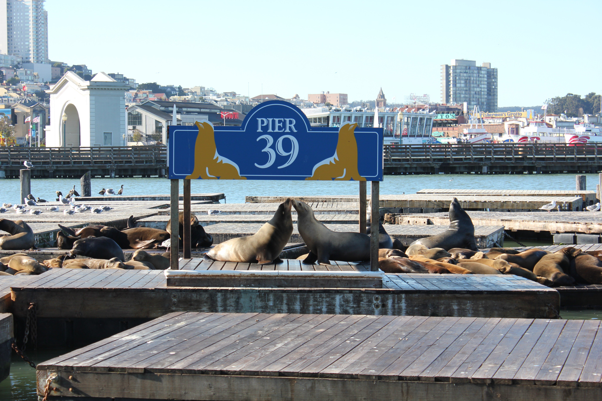

Pier 39
California Sea Lions have been always present in San Francisco Bay. They started to haul out on docks of Pier 39 in September 1989. Before that they mostly used Seal Rock for that purpose. Ever since September 1989 the number of sea lions on Seal Rock has been steadily decreasing, while their number on Pier 39 has generally increased. Some people speculate that sea lions moved to docks because of the 1989 Loma Prieta earthquake, but the earthquake occurred months after the first sea lions had arrived at Pier 39. It is likely that the sea lions feel safer inside the Bay.